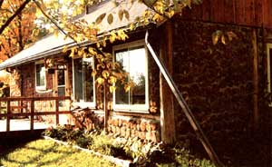
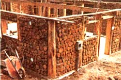
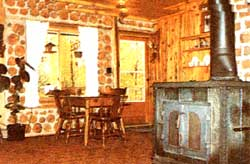
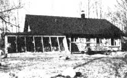
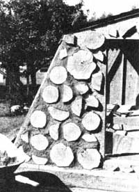

In this case,"lack of interest" applies to the financing, not to the owner-builder's spirit"
After a recent northern Wisconsin winter had left me with an empty oil tank, a barren pocketbook, woodchopper's back, and a mind fairly dancing with home-building fantasies, I made a promise to myself. By the next subzero season, my family and I would be well on our way to completing our own mortgage free, self-built, and tolerably energy-efficient house.
It was all part of a master plan I'd been mulling over that would allow us to move into an attractive home sweet home-free and clear of any debts or mortgages-for an outlay of no more than $15,000 ... $5,000 to erect the shell, and the remainder to bring it to comfortable completion. The capital, I figured, would come from our savings, life insurance policies, biweekly paychecks, and the equity from the sale of our mortgaged city home'. (Luckily, we already had the land. We'd had the foresight back in 1977 to purchase, at $200 an acre, 40 acres of beautiful glaciated forest not far from town.)
All winter long I'd been poring over information on conventional and log homes, stone and rammed earth structures, pole buildings, geodesic and foam domes, earth-sheltered houses, and both active and passive solar homes ... but any way I added it up, none of those construction methods would permit us to put one over on the home-finance cartel,
There was, however, one article on cordwood construction that really got my attention. It was packed with dollar facts on three different structures built in northern climates at a cost of between $2.66 and $6.00 per square foot. Man, were they ever talking my lan guage! I quickly got hold of three books on the construction technique (which, by the way, is also called log-end or stackwall building) and learned that it's been used for centuries and is characteristically executed today by stacking one- to two-foot lengths of fingerspan-diameter logs firewood-style, using a cement/sand/lime/sawdust mixture to hold them together at the ends, and insulating the center gaps with sawdust and lime, cellulose, polystvrene, or fiberglass stuffing.
After reading and rereading each text and working out some seat-of-the-pants calculations, I was convinced that cordwood was-considering our self-imposed financial restrictions-our only choice. My wife, Rebecca, and I spent the next weeks with a tape measure, graph paper, pencil, protractor, and a big eraser experimenting with a floor plan and overall design that'd be acceptable to us as well as to the plumbing and electrical contractors. After no fewer than 30 revisions, we finally settled on a 1,200-square-foot rectangular structure (1,064 feet of inside area) with a peaked 8/12-pitch roof and an extra 560 square feet of "second-story" living space built into the pre-engineered trusses.
With the design roughed out, I was able to start working up an accurate materials and tools list, hoping that costs would come within our budget. Unexpected price increases just weren't on the menu. If any did occur, we'd have to do our best to work around them ... since-without loans-we had no other choice.
ONE PIECE AT A TIME
Though almost any debarked and dried softwood is considered acceptable for stack wall construction, we chose to use red cedar for practical and aesthetic reasons. For one, it offers fine insulating qualities (with an R-value of about 1.25 per inch, or 6 times that of common brick) in addition to being naturally decay-resistant. Too, it has a light, pleasant appearance, a refreshing fragrance, and-most important to us-it is readily available at reasonable cost here in northern Wisconsin.
As it turned out, we had to get the equivalent of a 14-cord supply from four different sources that we located through a newspaper ad and the state Department of Natural Resources. The forest service folks generously provided the names of some timber cutters who'd applied for cedar permits. I bargained with them for most of the wood, and hauled it off myself for an average of $25 an uncut cord!
Fortunately, the entire supply was already dry, and, for the most part, debarked. I made a peeling spud to strip the stubborn trunks and rented a cutoff saw to trim the timbers down to uniform 12-1/2"-long rounds ... splitting the thickest of these to aid the drying process. The straightest and soundest logs were cut to 8' lengths and squared on two sides to become the post-and-beam framework of the cordwood walls.
With that out of the way, we were free to jump right into construction, starting at the bottom. Our foundation was a conventional 30' X 40' insulated concrete floating slab, poured by a local contractor and finished with an anchorbolted framework of pressure-treated 2 X 12's. The cedar posts-set wherever possible on 8' centers-rested on these sill plates and were tied together at their upper ends with doubled 2 X 10 top plates. Door and window openings were, likewise, framed with treated dimensional lumber. Erecting our home's structural skeleton was actually easier than we thought it'd be and demanded only the most basic of carpentry tools and skills. We had the entire frame up in no time and were eager to start "mudding up" the walls.
Choosing the correct mortar mix is perhaps the most critical aspect of cordwood construction. I discovered in my reading (and through some personal experimentation) that the proper combination of ingredients is crucial for success. One author-builder, Rob Roy, suggested using sawdust to improve the insulating qualities of the wall and make the mortar set better, so I included it in my recipe ... which consisted of 3 parts fine sand, 1 part portland cement, 1 part hydrated lime, 3 parts damp sawdust, and enough water to make a thick, workable mud. This timetested ratio looks nice (it has an off-white color), sets up applies to the financing, not to the owner-builder's spirit! slowly (a masonry plus), holds a tight bond to the wood rounds, and, in theory, provides a better insulative barrier against the cold than a wood-free mortar blend.
We set the cedar logs into the frame one row at a time, spreading mortar over the top of each row to a thickness of about 3/4" and covering only 3" of the outer and inner edges of each round. The hollows created in the center could then be filled with an insulating mix of 3 parts dry sawdust to 1 part agricultural lime. Though we all tried the traditional troweling method of applying our mud, I soon preferred to scoop the mortar up in my rubber-gloved hands and plop it in place. This shortcut technique yielded a near professional look.
After one day's labor, we realized how incredibly handy the post-and-beam framework actually was: With two people working, we could lay up one full 8'-square wall section in just eight hours at an expenditure of only $34.57 ... something of an accomplishment for amateur masons!
As the walls rose, the structure took on a stone-fortress-like appearance, and visitors began rolling in to gawk, talk, and even-on occasion-work. The ubiquitous sidewalk superintendents that wandered through fell into two categories: the prophets of doom, who held that cordwood construction was impossible (since they'd never seen it before) ... and a few visionaries, who delighted in the house's innovative style, simplicity, indigenous materials, and potential for owner building.
The many weeks it took to complete the walls of our new house gave me an opportunity to appreciate fully the "sweat equity" concept that most stackwood zealots are wont to rave about. In addition to the $350 worth of red cedar we'd bought, we had to purchase only cement ($140), 11 yards of clean sand ($35), and 30 bags of hydrated lime plus one bulk load of "barn" lime ($80). Since all our sawdust was given to us from a local sawmill, the total cost for erecting all the structure's walls (1,120 square feet of surface area) came to $605 ... roughly a 260% savings over conventional stud wall construction.
After not quite three months of spare-time building, we'd reached the point where we were ready to begin work on our home's roof and upper story. The upstairs isn't a true second level, but a living space designed into the center of our roof trusses that now boasts two bedrooms, a play area, a half-bath, and ample closet storage.
According to my calculator, having the trusses built at a local plant not only allowed us this extra 560 square feet of conditioned space but also saved us about $800 compared to the cost of cutting and nailing our own ceiling and roof joists. The job went more slowly than expected, though, as late summer rainstorms hampered our efforts to sheathe and shingle the roof. By mid-August the house was finally securely covered ... and after breathing a deep sigh of relief, we mounted the windows and doors in their previously framed openings. Our cordwood home was-after five months of on-again, off again work dried in and protected from the winter for a total expenditure of $4,755 ... $245 under budget!
The snows of Wisconsin's worst season saw us finishing the upstairs floor (1/2" plywood over particle board) and the stairway, and furring out selected walls on the main level in preparation for nailing up local Norway pine panel boards. By spring we were ready to sell our house in town, use the equity to finish our new home, and make our move to the country.
AN UNEXPECTED BLOW
Unfortunately, our readiness coincided with a sudden onslaught of rampant inflation and staggering 20% interest rates that created a virtual standstill in the real estate market. Caught between a rock and a hard place, we chose to borrow $8,000 from relatives-to be paid back upon the sale of our city house-rather than attempt to weather the economic storm in our old place while the new house sat in limbo.
With the newly acquired capital, the interior work accelerated to a fever pitch. We refurbished an existing well, contracted out plumbing and electrical work, installed the Norway pine ceilings and panels, built and nailed in place the cabinets, pantry, and bookcases, and-as a finishing touch-completed an interior brick chimney and purchased a sizable wood stove to be the main source of heat.
During these last months of construction, we were continually haunted by fear: What if we couldn't sell our city house? Could we leave the cordwood structure unheated if we were forced to live in town? For that matter, could we even maintain our old mortgage payments while finishing up our new home and trying to make good on our family debt? The physical, mental, and spiritual hassles of designing and building our first real home were a welcome challenge compared to the stress of being helpless in the face of economic uncertainty.
After six months of gnawing worry, we finally found a buyer for our house in town. I don't have to tell you how relieved we felt when the closing was over and I could repay our debts plus squirrel a little away in the savings account. When all the receipts were totaled, the cost of our home came to approximately $14,955 ... though I'll admit we splurged and parted with an additional $1,020 right away to upgrade our water delivery system. On the 10th of October (a date we're not likely to forget!) we spent the first night in our mortgage-free cordwood castle ... and we've been enjoying its handmade beauty, fragrance, and charm ever since.
EDITOR'S NOTE. Soon after he had completed his cordwood home, the author began work on a manuscript detailing a number of aspects of stackwood building. His 114-page paperback book, Cordwood Construction: A Log End View, includes black-and-white photographs, diagrams, formulas, suggestions, experiences, and a thorough appendix. The book is avail able for $4.95 plus $1.00 postage from Richard Flatau, W4837 Schulz Spur Drive, Merrill, WI 54452.
There are several other fine books on the subject, all of which were used by the author in the construction of his home. These are Building the Cordwood Home by Jack Henstridge (currently out of print, but perhaps available at your local library) ... Stackwall: How to Build It by The Northern Housing Committee of The University of Manitoba (available for, in Canadian funds, $12. 00 plus $4.60 to cover shipping, handling, and insurance from The University of Manitoba Bookstore, Fort Gary Campus, Winnipeg, Canada R3T 2N2) ... and Cordwood Masonry Houses: A Practical Guide for the Owner-Builder by Robert L. Roy (Sterling Publishing Company, available from Mother's Bookshelf(restricted), 105 Stoney Mountain Rd., Hendersonville, NC 28791 for $795 plus $1.50 shipping and handling).
Having gone through a project like this, I guess I shouldn't be surprised when people ask me for advice on the subject of cordwood construction. So here are my "Top Ten" suggestions, based mostly on my own hard learned lessons.
[1] Read every bit of information you can get your hands on concerning cordwood construction before even gathering the basic materials.
[2] Consider the time factor. To be sure, stackwood construction is an inexpensive building method, but you'll be swapping hours for dollars. It took us over two months (after work and on weekends) just to put up the walls, not counting time spent gathering and cutting wood.
[3] Build your first walls where they won't be readily seen, perhaps where bookcases, cabinets, or paneling might be used. It'll take a little while to get the mudding and stacking techniques down pat.
[4] Always wear heavy rubber gloves whenworking with mortar, and try coating your hands with petroleum jelly before slipping the gloves on. Cement burns are painful, and, for the most part, the scars are permanent.
[5] Prepare to caulk and seal the cracks that will inevitably develop in the cordwood. Even a round that looks relatively dry may shrink or split a tad more with time... but a little mortar and/or fiberglass batting stuffed into the opening will solve the problem nicely.
[6] Plan your building and site well, with an eye toward future expansion. We planned for an eventual solar addition (see other sidebar) and so designed accordingly.
[7] Although we spent only $15,000 on our cordwood home, you might be able to achieve a similar result for even less money. For example, we could have saved about $700 by using a railroad tie/gravel bed foundation detailed in the University of Manitoba book (see editor's note following the article). But check your local building codes to make sure such alternatives are legal before you get too involved with your project!
[8] I used cordwood rounds almost exclusively in the walls... but I noticed a significant increase in structural integrity in the places I used split wood. Actually, the experts are now recommending - almost unanimously - the use of splits instead of rounds... as well as endorsing longer log lengths (at least 16") for the sake of durability and the added insulation value.
[9] Work with sympathetic local contractors if possible. We were very candid with our plumber, electrician, and brick mason concerning our tight financial situation... and so were able to do a good deal of preparation work ourselves prior to calling in the pros to tie everything together. Obviously, this saved us some bucks and also gave us the satisfaction of learning something without risking a major screw up.
[10] Gather your materials, grit your teeth, and do it!
Although planning may not be the most exciting aspect of a building project, it's probably the most important and is always worth the effort. Our solar addition is a good example: Before Rebecca and I were even halfway into the design for our dream house, we realized that we'd have to allow fir eventual expansion ... and our first add-on would be, without question, a sun-drenched greenhouse/living area.
Naturally, this required that we orient the house properly and take into account the foliage on our property's southern face ... but it also meant that we had to arrange the floor plan to provide inside access to the sunspace and make the most of the "captured" energy.
Our 408-square-foot project, completed in the fall of 1983, isn't all that fancy, but we did try a sheathing experiment that allowed us to use conventional construction techniques while still maintaining the cordwood character of the main structure.
Essentially, the addition is an L built onto the southwest corner of the house. The 10 X 21' south-facing leg boasts an insulated cobblestone brick absorber floor, a Y-wide planting bed, and seven 34" X 76" "factory imperfect" thermopane window panels that I purchased for $16 apiece. To the rear of that, along the west wall, an 11' X 18' indoor patio area utilizes pressure-treated deck flooring (again, insulated below) and some additional thermopane glazing. A skylight placed toward the back of the "hind leg"provides some extra ambient lighting for that area, and a roof vent prevents overheating during summer's extremes. Both indoor and outdoor accesses were included.
So far, I haven't described anything out of the ordinary. In fact, even my framing technique-pressure-treated 2 X 6 studs on 24" centers spanned with 6" fiberglass batts - was rather ho-hum, as was the 2 X 4 joist, plywood, and asphalt-shingle roof. But I got really jazzed about a cordwood/ stucco siding idea that let me finish off the sunspace's exterior quickly and inexpensively without sacrificing the cordwood motif.
To make. each section of 4' X 8' siding, I took a sheet of 1/2" CDX plywood (el 3-ply, $7-a-sheet stuff) and tacked chicken wire to its surface. Then-I simply nailed and glued 2"-thick cedar rounds of various diameters (left over from my house building. cuttings) to the board and filled between the logs with a thick layer of sawdust/cement/lime mortar. I figure the cost of each panel to be about $10, which is a bargain considering that the work is not labor-in tensive. To carry the theme of the house through to the inside as well, I covered the interior or greenhouse walls with the same Nor way pine used in the bedrooms and parts of the living room. All told, using a good many recycled materials, our "cordwood" addition came to $1,665 in out-of-pocket expenses. Considering that it provides us with an extended living area, a place to grow veggies early and late in the season, and a "heat bank" in the form of the absorber floor and the true cord wood masonry corner wall, we think it's a worthwhile investment in our future.
|
 PHOTOS BY RICHARD AND REBECCA FLATAU |
 |
 |
|
 |
 |
|